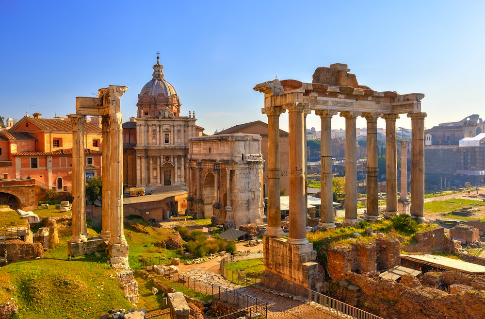

Descubre la maravilla de viajar por el mundo. ¡Haz clic para obtener más información!
Un viejo dicho romano afirma que Roma, "non basta una vita per scoprirla", esto es:
“Una vida no es suficiente para descubrir Roma."
Atractivos Turísticos
-
Basílica de San Pedro
-
Via dei Fori Imperiali
 -
El Vaticano
-
Coliseo Romano
Itinerario
Día 1:
Descubre la Basílica de San Pedro, en el día de San Pedro se celebran misas especiales en la impresionante Basílica de San Pedro en el Vaticano.
Día 2:
Conoce el Coliseo. En pleno centro histórico de Roma descubrirás el Coliseo, hoy apenas restos de lo que fue un modelo de ingenio para su construcción.
Día 3:
Roma nocturna. Pasear por las famosas plazas de Roma durante las noches de junio es uno de los grandes placeres que los visitantes van a encontrar en la ciudad.
Día 4:
Visita al Vaticano, para conocer la Basílica de San Pedro, los Museos Vaticanos y la Capilla Sixtina.
Día 5:
Las ruinas de Pompeya y Herculano, dos de las ciudades que sufrieron la furia del Vesubio en el año 79 y que mejor se han preservado a pesar de la destrucción que provocó el volcán.